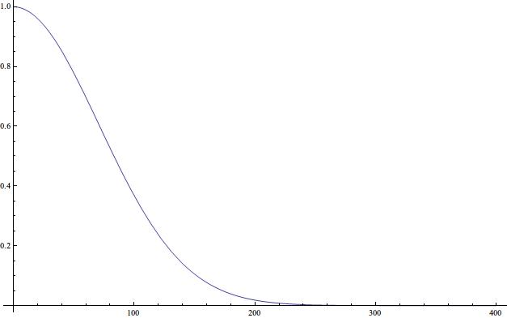
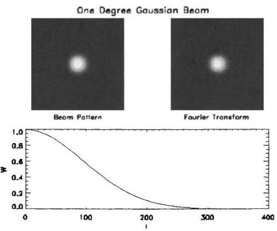
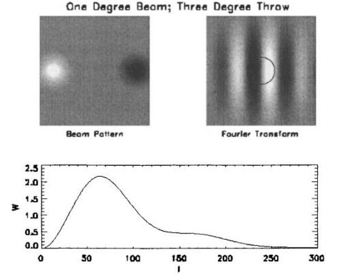
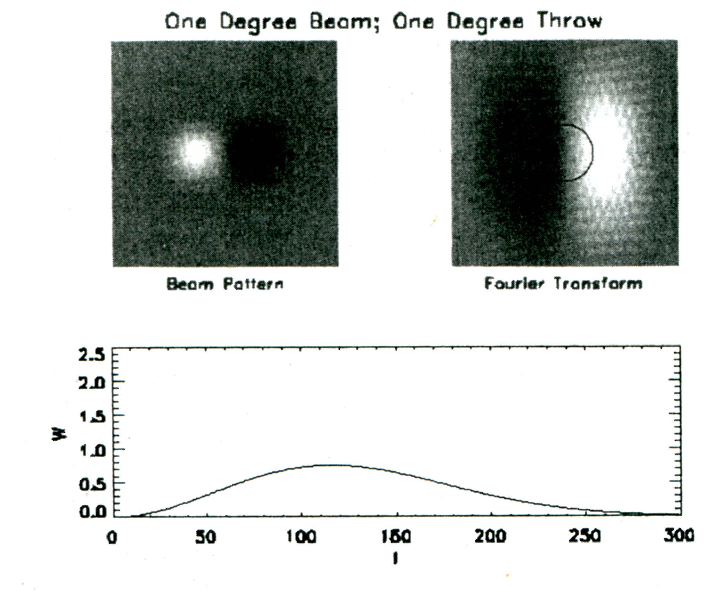

宇宙å¦ä¸çš„统计方法ã€�乙】
宇宙å¦ä¸çš„统计方法笔记系列，第二篇：CMB ä¸çš„统计方法。
Contents
ç³»åˆ—æ–‡ç« ç›®å½•ï¼š
- 宇宙å¦ä¸çš„统计方法ã€�甲】
- 宇宙å¦ä¸çš„统计方法ã€�乙】
- 宇宙å¦ä¸çš„统计方法ã€�丙】
- 宇宙å¦ä¸çš„统计方法ã€�ä¸�】
继ç»å‰�é�¢çš„ likelihood 的讨论，ä¸�过ç�°åœ¨è¦�扩展到 CMB ä¸æ�¥ã€‚ä¸�å‰�é�¢çš„ä¸�å�Œçš„地方是，之å‰�的例å�ä¸ï¼Œæˆ‘们的测é‡�是æ¯�次一个值的，但是在 CMB 的测é‡�ä¸ï¼Œæˆ‘们的数æ�®æ˜¯ä¸€ä¸ªåˆ†å¸ƒï¼Œè€Œä¸”之å‰�的例å�çš„æ¯�个数æ�®ç‚¹æˆ‘们是有ç�†è®ºå�¯ä»¥å®Œå…¨é¢„测的，而在 CMB ä¸ï¼Œæˆ‘们的分布的一个特定的数æ�®ç‚¹ï¼Œæˆ‘们是没有ç�†è®ºæ�¥å®Œæ•´é¢„测的，而是å�ªæœ‰ä¸€ä¸ªå¯¹æ‰€æœ‰ç‚¹çš„统计的预测。
CMB 的数�记录和相关�论
CMB 测�方法和数�记录待补充。flag 1
CMB 的观测ä¸ï¼Œæˆ‘们把天空分æˆ�很多åƒ�ç´ ç‚¹ï¼Œé’ˆå¯¹æ¯�个åƒ�ç´ ç‚¹è®°å½•æ¸©åº¦å�„项异性。下é�¢çš„分æ��ä¸æˆ‘们使用的温度å�„项异性，是相对äº�å¹³å�‡æ¸©åº¦çš„差异。
对äº�å�„项异性的ç�†è®ºé¢„言，我们选择较为简å�•çš„ Gaussian 分布的情况，å�³æ¯�个åƒ�ç´ ç‚¹ä¸Šçš„æ¸©åº¦å·®å¼‚åˆ†å¸ƒç¬¦å�ˆ Gaussian 分布。
å�•åƒ�ç´ ç‚¹çš„ likelihood
ç�°åœ¨æˆ‘们先建立数å¦æ��述。对äº�天空上的一个点，我们å�¯ä»¥æµ‹é‡�温度å�„项异性，其值为 \(s\)，而预测值（estimator）记å�š \(\Delta\)。跟å‰�é�¢çš„例å�ä¸€æ ·ï¼Œæˆ‘ä»¬å�Œæ ·ä¼šæœ‰ä¸€ä¸ªä»£è¡¨é¢„测结æ�œå�¯é� 性的é‡�（ Modern Cosmology ä¸æŠŠè¿™ä¸ªå�«å�š variance of the estimator）的é‡� \(C_N\)，类似å‰�é�¢çš„例å�，对äº� \(s\) å’Œ \(\Delta\) å�Œæ ·æœ‰ä¸€ä¸ªåˆ†å¸ƒï¼Œ
\[ P[s] = \frac{1}{\sqrt{ 2\pi C_N }} \exp\left( -\frac{(\Delta – s)^2}{2C_N}\right) \]
对äº�ç�†è®ºé¢„测，如æ�œæˆ‘们å�–暴涨模å�‹æ‰€ç»™å®šçš„ Gaussian 分布，那么就有下é�¢çš„这个关äº� \(S\) 的分布，其ä¸å�‚é‡�有 \(s\) å’Œ \(C_S\)
\[ P[\theta(\Delta,s)] = \frac{1}{\sqrt{2\pi C_S}}\exp\left( -\frac{s^2}{2C_S}\right) \]
ç�°åœ¨ï¼Œæˆ‘们关心的两个é‡�是 \(\Delta\) å’Œ \(C_S\)ï¼Œå› ä¸º \(\Delta\) 是我们è¦�的温度å�„项异性值，而 \(C_S\) ç›´æ�¥è·Ÿæˆ‘们å��é�¢è¦�了解的一个é‡� \(C_l\) å…³è�”，\(C_l\) 是我们è¦�的最终结æ�œï¼Œè€Œ \(s\) è¿™æ ·çš„é‡�我们并ä¸�关心。所以，ç�°åœ¨è¿™ç§�情况下，我们需è¦�求的 likelihood å…¶å®�是 \(P[\Delta|C_S]\)，也就是给定一个带有å�‚æ•° \(C_l\) çš„ç�†è®ºï¼Œå¾—到数æ�® \(\Delta\) 的概ç�‡ã€‚
é‚£ä¹ˆæ ¹æ�®æ¦‚ç�‡è®ºï¼ˆä¹‹å‰�的例å�ä¸æœ‰å…·ä½“计算æ¥éª¤ï¼‰
\[ P[\Delta|C_S] = \sum_s P[\Delta|s] \times P[s|C_S] \]
在 Modern Cosmology ä¸ï¼ŒScott Dodelson 并没有对这里的 likelihood 进行很多解释。这里 flag 一下，æ��醒以å��注æ„�å›�æ�¥æ£€æŸ¥ç²¾ç®€è¿™æ®µæ��述。flag 2
�是 Likelihood function 是概�密度的积分
\[ {\scr L} = \int^\infty_{-\infty} \mathrm ds \frac{1}{\sqrt{2\pi C_S}}\exp\left( -\frac{s^2}{2C_S}\right) \frac{1}{\sqrt{ 2\pi C_N }} \exp\left( -\frac{(\Delta – s)^2}{2C_N}\right) \]
定义 \(C=C_S+C_N\) 是 full covariance matrix，把 \(s\) 积分积�，
\begin{eqnarray}
{\scr L} &=& \int \mathrm ds \frac{1}{2\pi \sqrt{C_S C_N}} \exp\left( -\frac{s^2 C_N + (\Delta – s)^2C_S}{2C_S C_N} \right) \\
&=& \frac{1}{2\pi\sqrt{C_S C_N}} \int \mathrm ds \exp\left( -\frac{ C(s- C_S \Delta/C)^2 + \Delta^2 (C_S C_N/C) }{2C_N C_S} \right) \\
&=& \frac{1}{\sqrt{2\pi C_S}}\exp\left( – \frac{\Delta^2}{2C} \right) \int \mathrm d(s – C_S\Delta/C)\exp\left( – \frac{C(s – C_S\Delta/C)^2 }{2C_S C_N} \right) \\
&=& \frac{1}{\sqrt{2\pi C}}\exp\left( -\frac{\Delta^2}{2C} \right)
\end{eqnarray}
多åƒ�ç´ ç‚¹æƒ…å†µ
待补充。详细说�为何�以使用矩阵形�。flag 3
è¿™æ ·æˆ‘ä»¬å°±å¾—åˆ°äº†å¤©ç©ºä¸ä¸€ä¸ªåƒ�ç´ ç‚¹çš„æƒ…å†µï¼Œå�¯ä»¥æ�¨å¹¿åˆ° N 个åƒ�ç´ ç‚¹çš„æƒ…å†µï¼Œ
\begin{equation}
{\scr L} = \frac{1}{(2\pi)^{N/2}(\mathrm {det} \bf C)^{1/2}} \exp\left( – \frac{1}{2} \bf \Delta \bf C^{-1} \bf\Delta \right) \label{eqn-multipixellikelihood}
\end{equation}
上å¼�（方程(\ref{eqn-multipixellikelihood})ï¼‰ä¸ \(\Delta\) 是长度为 \( N \)测é‡�æ•°æ�®çŸ¢é‡�，而 \(C\) 是 \(N\times N\) çš„ full corariance matrix。
Covariance Matrix
上é�¢å‡ºç�°çš„三个 covariance matrix 分别是 \(C_S\)，\(C_N\)，\(C\)ã€‚å…¶ä¸ \(C_S\) 是出ç�°åœ¨ \(s\) 的分布ä¸çš„，也就是说是ç�†è®ºä¸Š \(s\) 的分布宽度，称之为 signal covariance matrix，ä¸�测é‡�ä¸çš„å™ªå£°æ— å…³ã€‚ä»� \(C_S\) 到 \(C\) å…¶å®�是个很å¤�æ�‚çš„è¿‡ç¨‹ï¼Œä¸¥æ ¼çš„è¯´ï¼Œ\(C\) ä¸éœ€è¦�考虑到任æ„�的两个 parameter ç›´æ�¥çš„å…³è�”。
详细说�如何关�。flag 4
Covariance Matrix 的求解
如�我们之考虑 covariance matrix 的对角项，
\[ C_{S,ii} \equiv \langle s_i s_i \rangle \]
å…¶ä¸å…ƒç´
\[ s_i = \int \mathrm d \hat n\Theta(\hat n) B_i(\hat n) \]
å…¶ä¸ \(\Theta(\hat n)\) 是温度背景，\(B_i\) 是 beam pattern，也就是代表信å�·çš„性质的é‡�。对äº�æ¯�个åƒ�ç´ ç‚¹éƒ½è¦�把所有的方å�‘çš„å…‰å�都考虑进æ�¥ã€‚
把 \(s_i\) 带入 \(C_{S,ii}\) �以得到 covariance matrix
\[ \frac{C_{S,ii}}{T^2} = \int \mathrm d\hat n \int \mathrm d\hat n’ B_i(\hat n)B_i(\hat n’) \sum_{lm} Y_{lm}(\hat n)\sum_{l’m’} Y_{l’m’}^*(\hat n’)\langle a_{lm}a_{l’m’}^* \rangle \]
å…¶ä¸ç”¨åˆ°äº†
\[ \Theta(\hat n) = \sum_{i=1}^\infty \sum_{m=-l}^{l} a_{lm} T Y_{lm}(\hat n) \]
*Modern Cosmology* ä¸å†™ \(\Theta\) æ—¶ä¸�å�« \(T\)ï¼Œä½†æ˜¯ä¹¦ä¸ 11.35 å¼�å�´å�«æœ‰ \(T\)，所以我把 \(T\) æ·»åŠ åˆ°äº† \(\Theta\) 的分解ä¸ã€‚ flag 5
把下�带入 covariance matrix 的表达�
\[ \langle a_{lm} \rangle; \langle a_{lm} a_{l’m’}^* \rangle = \delta_{ll’}\delta_{mm’}C_l \]
把 \(l’,m’\) 的求和求出æ�¥
\[ \frac{C_{S,ii}}{T^2} = \int \mathrm d\hat n \int \mathrm d\hat n’ B_i(\hat n) B_i(\hat n’) \sum_{l} C_l \sum_m Y_{lm}(\hat n) Y_{lm}^*(\hat n’) \]
我们知���函数有如下性质
\[ \sum_m Y_{lm}(\hat n)Y_{lm}^*(\hat n’) = (2l+1) P_l (\hat n\cdot \hat n’)/4\pi \]
定义
\[ W_{l,ii} = \int \mathrm d\hat n\int \mathrm d\hat n’ B_i(\hat n)B_i(\hat n’) P_l(\hat n\cdot \hat n’) \]
å…¶ä¸çš„ \(\hat n \cdot \hat n’\) å�¯ä»¥å†™æˆ� \(\cos(x)\)ï¼Œå…¶ä¸ \(x\) 是 \(\hat n\) å’Œ \(\hat n’\) ä¹‹é—´æ‰€å¤¹çš„å¼§é•¿ã€‚è¿™æ ·æˆ‘ä»¬å�¯ä»¥åœ¨ä¸€ä¸ªäºŒç»´å¹³é�¢ä¸Šå®šä¹‰ä¸¤ä¸ªçŸ¢é‡�，\(\vec x\) å’Œ \(\vec x’\)，使得 \( \cos(x) = \cos(|\vec x – \vec x’|) \)，å�³ \(\hat n\cdot \hat n’ = \cos(\vec x – \vec x’)\)
�是
\[ W_{l,ii} = \int \mathrm d^2x\int \mathrm d^2 x’ B_i(x) B_i(x’) P_l(\cos(|\vec x – \vec x’|) ) \]
为什么å�˜æˆ�二次导数了？我求的是一次导数。å›�æ�¥çœ‹çœ‹ã€‚下é�¢è¿˜æ˜¯ç»§ç»æŒ‰ç…§ *Modern Cosmology* 里é�¢æ‰€è®²çš„æ�¥å†™ã€‚ flag 6
所以 covariance matrix ��
\[ \frac{C_{S,ii}}{T^2} = \sum_l \frac{2l+1}{4\pi} C_l W_{l,ii} \]
å…³äº�上é�¢æ��到的 window function \(W_{l,ii}\)， 还å�¯ä»¥ç»§ç»åŒ–简。首先，我们把 Legendre polynomials 表达出æ�¥ï¼Œä¸�过这里è¦�用一个近似，就是在 l 很大的时候， Legendre polynomials è¿‘ä¼¼å�˜æˆ� Bessel function.
\[ P_{l} (\cos(|\vec x – \vec x’|)) \rightarrow J_0 (l|\vec x – \vec x’|) = \frac{1}{2\pi} \int_0^{2\pi} \mathrm d\phi \exp{-il |\vec x – \vec x’| \cos\phi} \]
å…¶ä¸ \(\phi\) çš„æ„�æ€�是 \(l\) å’Œ \(\vec x – \vec x’\) 之间的é¢�夹角。\(l\) çš„æ–¹å�‘å�¯ä»¥é€‰å�šæŸ�æ�¡å��æ ‡è½´çš„æ–¹å�‘比较方便。
è¿™æ ·æˆ‘ä»¬å°±å�¯ä»¥æŠŠ window function 简化æˆ�
\[ W_{l,ii} = \frac{1}{2\pi} \int_0^{2\pi}\mathrm d\phi |\tilde B_i(\vec l)|^2 \]
å…¶ä¸
\[ \tilde B_i(\vec l) \equiv \int \mathrm d^2x B_i(\vec x)e^{-i \vec l \vec x} \]
是 \(B_i\) 的 Fourier ��。
è¿™æ ·æˆ‘ä»¬å°±å�¯ä»¥æŠŠ covariance matrix 的对角项表示出æ�¥äº†ï¼Œé€‰æ‹©ç‰¹å®šçš„ window function，就å�¯ä»¥æ±‚解。
但是这å�ªæ˜¯å¯¹è§’项，å®�际上é��对角项也是å˜åœ¨çš„ï¼Œä¸¥æ ¼çš„è®¡ç®—éœ€è¦�把é��对角项也包括进æ�¥ã€‚
Window Function 的例å�
Gaussian Beam
对� Guassian beam 的情况，beam pattern 写作
\[ B_i(\vec x) = \frac{1}{2\pi \sigma} \exp\left( -\frac{(\vec x -\vec x_i)^2}{2\sigma^2} \right) \]
先令 \(\vec x_i = 0\)，方便 Fourier ��。
Fourier ��得到
\[ \tilde B_i(\vec l) =\frac{1}{2\pi \sigma^2} \int \mathrm d^2x e^{-i\vec l \cdot\vec x} \exp\left( -\frac{x^2}{2\sigma^2} \right) = e^{-l^2\sigma^2/2} \]
å› ä¸º Fourier å�˜æ�¢ä¹‹å��并ä¸�涉å�Š \(\vec l\) æ–¹å�‘，所以 window function å�¯ä»¥ç«‹åˆ»å¾—出æ�¥
\[ W_{l,ii} = e^{-l^2\sigma^2} \]
这个函数的行为我们都很熟悉，如下所示，

也就是说对äº�很大的 \(l\)，window function 会消失。æ�¢å�¥è¯�è¯´ï¼Œå› ä¸ºå¾ˆå¤§ \(l\) æ£å¥½å¯¹åº”很å°�的角分辨ç�‡ï¼Œæ‰€ä»¥å°±æ˜¯è¯´ï¼Œå¯¹äº�那些角分辨ç�‡å°�äº� beam 的宽度的时候，这部分对äº� covariance matrix 的贡献就自动被 window function 过滤æ�‰äº†ã€‚
下é�¢æ˜¯ä¸€ä¸ªä¾‹å�。左上图是å®�空间里é�¢çš„ beam çš„ pattern，å�³ä¸Šå›¾è¡¨ç¤º beam å�š Fourier 展开å��在 Fourier 空间ä¸çš„ pattern，下部图表示 window function。

Differencing a Gaussian Beam
Beam function 也�以选择如下形�
\[ B(x,y) = \delta(y)[\delta(x-x_0) – \delta(x + x_0)] \]
è¿™æ ·çš„ beam function æ„�æ€�是？
� Fourier ��，得到
\[ \tilde B (\vec l) = 2i\sin(l_x x_0) \]
带入 window function 得到
\begin{eqnarray}
W_l &=& \frac{1}{2\pi} 4 \int _0^{2\pi} \mathrm d\phi \sin^2(lx_0\cos\phi) \\
&=& \frac{1}{\pi}\int_0^{2\pi} \mathrm d\phi (1-\cos(2lx_0\cos\phi)) \\
&=& 2(1-P_l[\cos(2x_0)])
\end{eqnarray}
这里�用了��用过的 Bessel function 和 Legendre function 之间的近似。
那么如æ�œ beam 的宽度ä¸�æ˜¯æ— ç©·å°�，而是有é™�大的，那么å‰�é�¢çš„ \(\delta\) 函数就å�˜åŒ–æˆ�积分就好了，也就是说
\[ B(x,y) = \frac{ 2\pi \sigma^2 } \int \mathrm dx’\mathrm dy’\exp\left( -\frac{(x-x’)^2 + (y -y’)^2}{2\sigma} \right) \times \delta(y’) [\delta(x’ – x_0) – \delta(x’ + x_0)] \]
那么相应的 window function ��就是
\[ W_l = e^{-l^2\sigma^2} (1 – P_l[\cos(2x_0)]) \]
下é�¢æ˜¯ä¸€ä¸ªä¾‹å�。左上图是å®�空间里é�¢çš„ beam çš„ pattern，å�³ä¸Šå›¾è¡¨ç¤º beam å�š Fourier 展开å��在 Fourier 空间ä¸çš„ pattern，下部图表示 window function。

ä¸‹å›¾æ˜¯ä¸€ä¸ªæ›´åŠ ç´§è‡´çš„ beam 的情况。

本文共有 6 个 flag。请仔细检阅并消除所有 flag。

最近评论